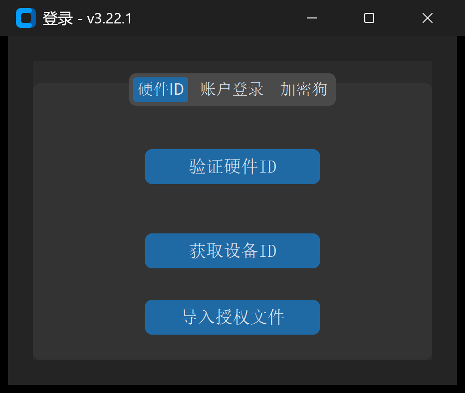

1.1 系统要求、安装与授权激活
本节介绍 IGD 磨削修整计算软件 的软硬件运行环境、安装启动流程，以及 4 种授权验证机制 的具体操作方法。
一、系统环境要求
为保证三维螺旋面高密度点云（最终曲线点密度 ）空间啮合包络求解与交互式 3D 视图渲染流畅，建议运行环境满足以下配置：
| 配置项 | 最低要求 | 推荐工程配置 |
|---|---|---|
| 操作系统 | Windows 10 (64-bit) / macOS 12+ | Windows 10 / 11 专业版 (64-bit) |
| 处理器 (CPU) | Intel Core i5 / AMD Ryzen 5（4 核及以上） | Intel Core i7 / Ryzen 7（8 核及以上，高主频有利于包络迭代） |
| 内存 (RAM) | 8 GB | 16 GB 及以上 |
| 显示器分辨率 | （缩放比例 100%） | 或 （推荐 100%~125% 缩放） |
| 外设与浏览器 | USB 2.0/3.0 接口（使用硬件加密狗时） | Chrome / Edge 现代浏览器（用于查看交互式 3D HTML 报告） |
平台特性说明：
高级参数 -> 初始化配置中的Siemens程序加密（将明文.SPF自动编译加密为.CPF）依赖 Windows 平台专用加密组件，仅在 Windows 系统下可勾选生效。
二、软件安装与用户数据目录
- 安装或解压：运行官方安装包或将绿色发行版解压至本地非系统保护目录（例如
D:\IGD_Software\），双击主程序IGD.exe启动。 - 本地配置与零件库目录（
~/.igd）： 软件首次启动时，会在当前操作系统用户主目录下自动初始化隐藏工作区文件夹C:\Users\<用户名>\.igd\，用于持久化保存所有个性化设置与工程数据，软件升级时不会覆盖此目录：config.json：记录界面语言（中文/English）与全局系统参数；last_settings.json：自动记忆上一次成功执行生成代码时的全部界面参数，下次启动软件时自动恢复；PartsLibrary/：存放用户在工具 -> 零件库中归档的所有典型工件配置包。
三、软件授权与激活流程

软件内置多重授权校验机制。启动 IGD.exe 时，系统会按以下优先级自动检测授权状态：
方式 1：USB 硬件加密狗（推荐现场离线工控机使用）
- 将官方配发的 USB 硬件加密狗 插入计算机 USB 接口；
- 启动软件，系统若检测到有效加密狗且在授权有效期内，将直接跳过登录弹窗进入主界面，并在软件左下角状态栏显示：
🟢 加密狗授权已激活
- 若软件已处于登录窗口，再插入加密狗，可切换至
加密狗标签页并点击验证加密狗按钮立即激活。 - 运行期热插拔保护：加密狗激活状态下，后台守护线程每 30 秒自动巡检一次硬件连接。若运行途中拔出加密狗，软件将弹出
加密狗连接断开，程序即将关闭！警告并安全退出。
方式 2：导入离线授权文件（.lic）
适用于无外网环境且已绑定工控机硬件指纹或加密狗序列号的场景：
- 在登录窗口底部点击
导入授权文件按钮； - 在文件选择对话框中选中官方签发的授权文件（
*.lic）； - 系统验证签名与有效期通过后，自动将其保存至本地配置目录并弹出
授权文件导入成功！，随后直接进入主界面。
方式 3：硬件 ID 离线激活
- 在登录窗口切换至
硬件ID标签页； - 点击
获取设备ID，系统自动采集当前计算机主板与硬件特征码并填入文本框； - 将该硬件 ID 发送给技术支持人员获取对应的离线授权或验证配置后，点击
验证硬件ID完成本机绑定激活。
方式 4：账户密码登录与注册
- 若采用账号授权模式，在
账户登录标签页输入用户名与密码，点击登录； - 首次使用账户模式的设备，可点击窗口右上角
注册按钮切换至注册面板，在账户注册标签页填写用户名、密码、确认密码、官方发放的注册码与本机硬件ID，点击注册完成激活。
四、定制版模块权限说明（动态界面适配）
IGD 支持按客户机型与工艺包（通过许可证中的配置策略）动态裁剪或开放界面模块：
- 标准全功能版：开放全部 4 大主标签页（
基本参数、高级参数、绘图工具、工具箱）、全部 13 种数控程序模式及所有子模块； - 专机定制版：若您看到的界面仅显示部分
程序模式（例如仅保留适配本厂机床的模式-0或模式-5）或隐藏了部分非标建模标签页，属于当前授权许可证对应的专机精简视图，旨在防止现场操作工误触无关机床宏变量。如需开通额外模块，请联系技术支持更新.lic授权文件。